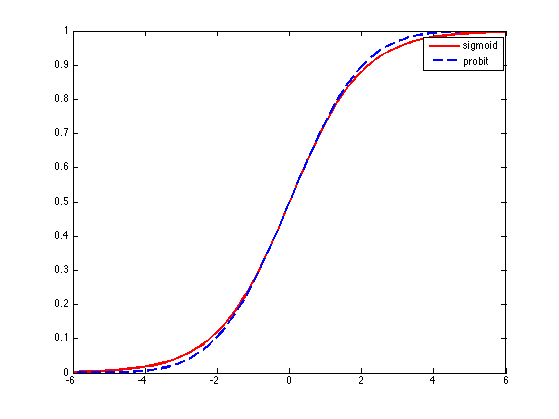

Plot the probit and sigmoid functions
Same as Bishop fig 4.9
clear all x = linspace(-6,6,100); s = sigmoid(x); lambda = sqrt(pi/8); for i=1:numel(x), p(i) = normcdf(x(i)*lambda); end figure; plot(x,s,'r-','linewidth',2); hold on plot(x,p,'b--','linewidth',2); legend('sigmoid', 'probit') printPmtkFigure('probitSigmoidPlot')